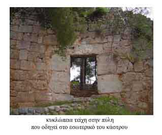

Οχύρωση Αρχαίας ¶μφισσας
 Δύσκολα διακρίνει κανείς τον εξωτερικό περίβολο του κάστρου της ¶μφισσας. Τα σημερινά λιγοστά κατάλοιπα φανερώνουν την ύπαρξή του εκεί από τα αρχαία χρόνια, όταν αγκάλιαζε ολόκληρο το λόφο του κάστρου και προστάτευε την αρχαία πόλη. Τεράστιοι ογκόλιθοι, λείψανα από τα γνωστά κυκλώπεια τείχη, βρίσκονται στη βάση των τειχών καθώς και στην ορθογώνια αρχαιοελληνική πύλη που οδηγεί στο εσωτερικό του κάστρου. | ||